About Me
Hello! I'm Randy Mattoka, a digital illustrator and concept artist who fuses bold line art with modern color and form.
My work explores comic art through shape, lighting, and atmosphere — blending traditional influences with digital precision to create expressive, cinematic worlds. Below you will also find concept art and designs from Nightwatch, a video game my friend and I are currently hard at work on!
Completed Artwork


Nightwatch


Process / Sketches